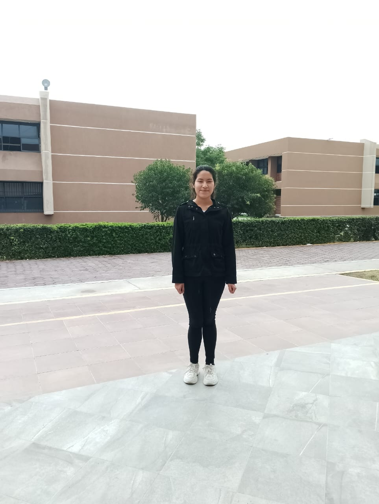
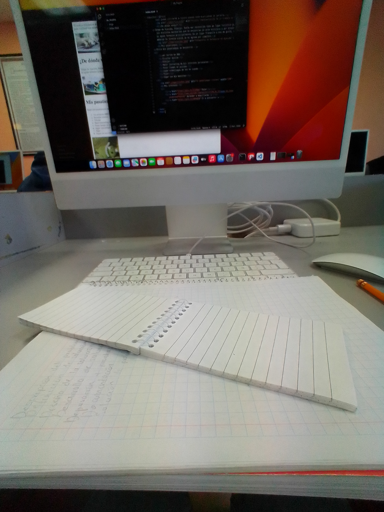
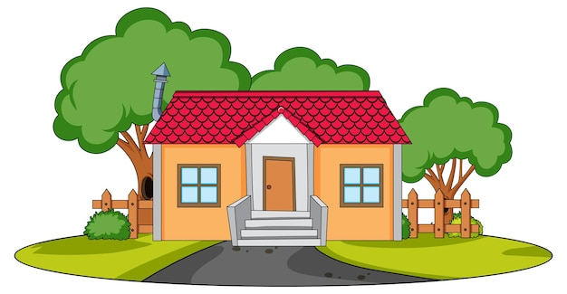

Me llamo Carol Mera Ibarra. Soy estudiante de nivel superior con la meta de terminar la carrera. Me considero una persona introvertida, pero un poco sociable y solidaria con quienes me rodean. Me gusta realizar actividades recreativas donde pueda poner en práctica mi creatividad. Considero que me falta más fuerza de voluntad para cumplir con mis objetivos a pesar de que siempre trato de esforzarme en cualquier aspecto de mi vida e intento salir adelante. Me gustaría poder lograr alguna meta o logro destacable alguna vez y aportar algo de mi a quienes me rodean, como a mi familia y amistades.
El motivo principal es por un posible futuro con estabilidad económica. Por diversas cuestiones terminó siendo la opción elegida entre otras opciones para continuar mis estudios. Sigo en la búsqueda de un área de enfoque en la cual pueda centrarme a futuro cuando esté ejerciendo la carrera. En un principio no tenía contemplada la carrera y consideré otra opción sin embargo, esta fue mi decisión definitiva y final para continuar con mis estudios después de dos años de haber salido del nivel medio superior. Aunque muchas veces se vuelve difícil seguir, considero que valdrá la pena en unos años más cuando logre graduarme.
Vengo de Ajacuba, Hidalgo. Suele ser reconocido como un lugar turístico por los distintos balnerios que se encuentran en este municipio y por disponer de aguas termales principalmente. Es un lugar tranquilo y es lo que más me gusta, sin embargo no termina siendo de mi agrado por completo por algunas cuestiones como la falta de servicios y lugares donde pueda entretenerme en mis tiempos libres, así que es necesario acudir a la ciudad más cercana a mí o a municipios cercanos. De cualquier manera, estoy cómoda con el hecho de no lidiar con el tráfico o delincuencia de las ciudades o incluso de las localidades próximas.
